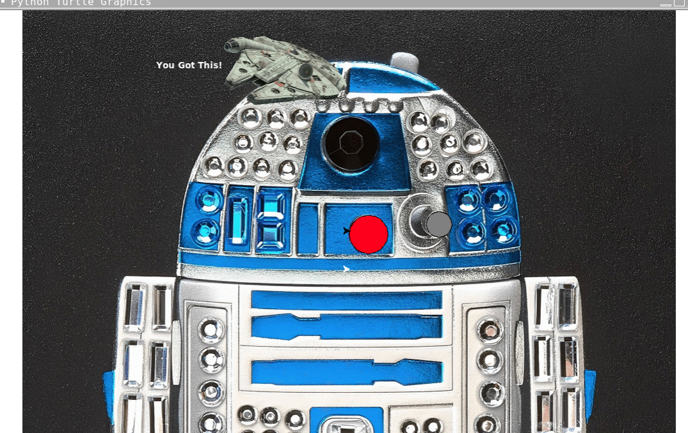

Home
Portfolio
About Me
This is my Portfolio Page!
1.1.9 Project: Stereo Simulation.


I did my project with my partner, Mikayla. We made a stereo simulation that first draws a stereo, and then asks the user if they want to play music.
If the user says yes, then music notes will appear and go around the stereo to simulate music playing. Then, it will ask if they want to play another song, and it will do the same thing again.
Ping Pong Game

With my partners Kayden and Claire, we created an air hockey game that changes color each time the player hits the ball.
There is a score counter at top that lets the players keep track of the score
Children's Hospital Robot e-card

With my partner, John we created a virtual card. When you press the red button on the robot it show a joke, and then press gray button to
display the answer. At the top, you can press the death star and then the millenium falcon will come and blow up the death star. After, it will display a
message that says "get well soon."